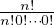

Binomial Distribution
From Binomial Theorem To Multinomial Distribution
[PDF]
Binomial Distribution is one of the most fundamental and earliest models of distribution in the field of Statistics and Probability Theory. This text will guide you through the derivation of the distribution and slowly lead to its expansion, which is the Multinomial Distribution.
Binomial Distribution forms on the basis of Binomial Theorem. Binomial Theorem states that
where the value of n can be any real number.
We can substitute x and y with p and q where the sum of p and q is 1. The Binomial Theorem statement will then become
Now, we can assign meanings to the variables p and q. Imagine we are playing a game and the outcome can be either positive or negative. The probability of the positive result, denoted as p, plus the probability of the negative result, denoted as q, is 100% = 1. In addition, the game has been played for n trials which gives (p + q) the power n.
The terms on the right-hand side of the above equation represent the probability for a certain combination of positive and negative results among the total n trials. For example, (n 0) pnq0 represents the value of the probability for the combination of n times positive results and 0 times negative result. With that, we can find the probability of any combinations of positive and negative results. Thus, we have the equation (formal name being Probability Mass Function)
where X is the variable of the number of positive results and k represents the number of positive result we are finding the probability for. This type of distribution is the Binomial Distribution B(n,p) with n being the total number of trials and p being the success rate.
An expansion of Binomial Distribution is Multinomial Distribution. This type of distribution, like Binomial Distribution, is based on Multinomial Theorem. Multinomial Theorem states that
where n1, n2 ... are nonnegative and n1 +  + nr = n.
+ nr = n.
The game we played for Binomial Distribution only has two possible outcomes - positive and negative. Let’s tweak the
game a little bit. Instead of two, we will have r possible outcomes and denote them by N1,...,Nr. The
probability of getting each of the r outcomes is p1,...,pr respectively, and p1 +  + pr = 1. Here, the game
is played for n number of times which gives the power of (p1 +
+ pr = 1. Here, the game
is played for n number of times which gives the power of (p1 +  + pr). Also, n1, n2 ... will denote
the number of times for each outcome N1,...,Nr to occur over n trials of this game. The equation is,
therefore,
+ pr). Also, n1, n2 ... will denote
the number of times for each outcome N1,...,Nr to occur over n trials of this game. The equation is,
therefore,
So, each term on the right hand side of the equation will be representing the probability of each combination of the
outcomes after playing n trials of games. For example, one term can be p1np
20 x
r0, which represent the
combination of all the outcomes from the n rounds of game to be N1. Thus, we have the equation of the joint
distribution as
x
r0, which represent the
combination of all the outcomes from the n rounds of game to be N1. Thus, we have the equation of the joint
distribution as

and this distribution is the Multinomial Distribution M(n,r,p1, ,pr−1,pr).
,pr−1,pr).
With that, we have derived Binomial Distribution from Binomial Theorem and made certain adjustments to obtain Multinomial Distribution. However, this is not the only change we can make on Binomial Distribution. Instead of having a constant probability to each outcome as the game is played for many trials, what if the probability changes as the number of trials change? More detail and elaboration on that will be discussed in the next article.